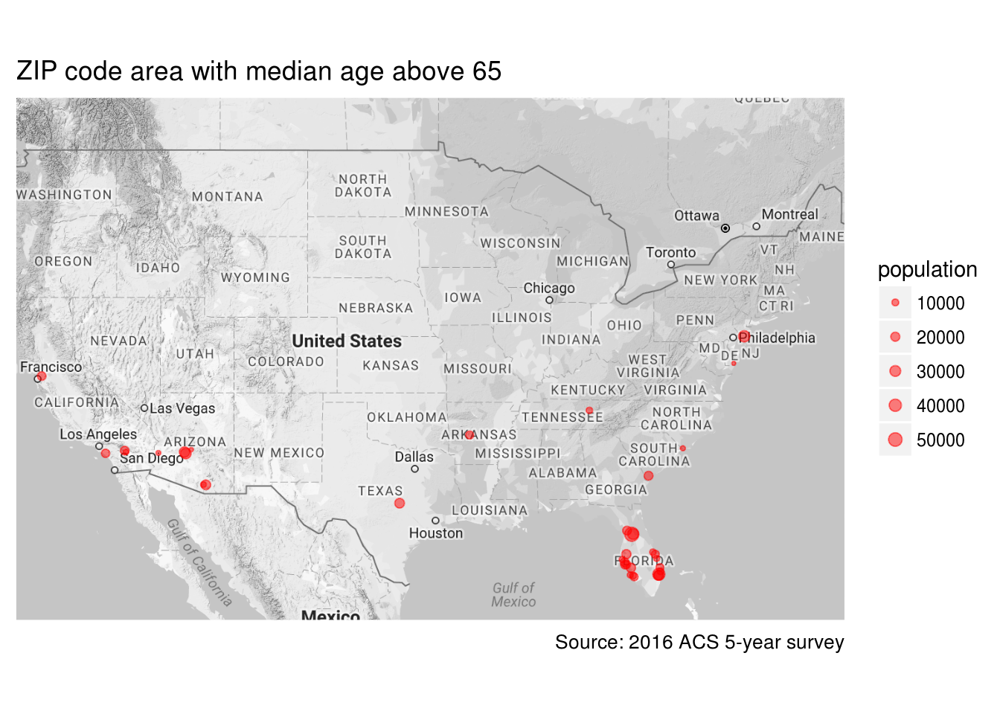

This is an example of more complicated applications of totalcensus package. To install the package, follow the instructions at https://github.com/GL-Li/totalcensus.
In this example, we examine data related to 5-digit ZIP Code Tabulation Area (ZCTA5), using 2016 ACS 5-year survey summary files. Let’s first load the libraries and then answer a couple questions related to zip code
library(totalcensus)
library(data.table)
library(magrittr)
library(ggplot2)
library(ggmap)What’s the population in a ZCTA5
There are 32898 ZCTA5s in the United States and a ZCTA5 has an average population of 9656 and a median population of 2780. The population distribution is highly skewed towards zero with 320 of them having no people living in and 1583 having population below 100. There are 252 zip code having population over 65000.
# read population in each zip code
zip_population <- read_acs5year(
year = 2016,
states = "US",
geo_headers = "ZCTA5",
summary_level = "860"
)##
## Reading US 2016 ACS 5-year survey geography filesummary(zip_population$population)## Min. 1st Qu. Median Mean 3rd Qu. Max.
## 0 714 2780 9656 13040 115104Median age in a ZCTA5
Just for fun, let’s find out the median age of population living in each ZCTA5. The result is pretty interesting. After removing those ZCTA5s with population below 1000 and those with larger margin of error in median age estimate and population count, the smallest median age of a ZCTA5 is 19 and largest is 75.50. These numbers mean that some zip code tabulation area are dominated by very young people while some are dominated by very old ones.
# read median age
median_age <- read_acs5year(
year = 2016,
states = "US",
table_contents = "median_age = B01002_001",
geo_headers = "ZCTA5",
summary_level = "860",
with_margin = TRUE
) %>%
# only keep good age estimate and population count
.[median_age_margin < 0.1 * median_age] %>%
.[population_margin < 0.1 * population] %>%
# remove ZCTA5 with population below 1000
.[population > 1000]##
## Reading US 2016 ACS 5-year survey geography filesummary(median_age$median_age)## Min. 1st Qu. Median Mean 3rd Qu. Max.
## 19.00 35.60 39.90 39.89 43.90 75.50How are these extreme median ages possible for a zip code area which has thousands population? The young median age is easier to understand - many colleges are assigned exclusively with a zip code and the residents in this zip are mostly students living in dorms so the median age can be very low. The zip code areas with very old median age, though a supprise, are still understandable: these are the communities full of retired people.
It is said that poeple like to go to South for warm weather after retirement. Can we see this from the median age data? Yes, old people went Florida!
# download US map
us_map <- get_map("US", zoom = 4, color = "bw")
# plot ZCTA5 with 65 or up median age on map
ggmap(us_map) +
geom_point(data = median_age[median_age > 65],
aes(lon, lat, size = population),
color = "red",
alpha = 0.5) +
ylim(25, 50) +
scale_size_area(max_size = 3) +
labs(
title = "ZIP code area with median age above 65",
caption = "Source: 2016 ACS 5-year survey",
x = NULL,
y = NULL
) +
theme(
axis.text = element_blank(),
axis.ticks = element_blank()
)